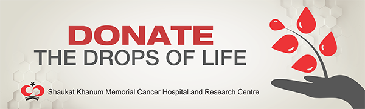

Join Shaukat Khanum Blood Donors Club
The only source of blood is healthy volunteer donors. As cancer patients need blood transfusions during their treatment, at Shaukat Khanum Memorial Cancer Hospital and Research Centre in Lahore and Peshawar, we need more than 65 bags of blood and blood components every day. One bag of blood can save more than one life.
To act as a model institution to alleviate the suffering of patients with cancer through the application of modern methods of curative and palliative therapy irrespective of their ability to pay, the education of health care professionals and the public and perform research into the causes and treatment of cancer.

Frequently Asked Questions about Blood Donation
Q. Who can donate blood?
Ans. Any healthy individual can donate blood. Before taking blood, some questions related to your health will be asked to make sure that you can donate blood.
Q. Can I donate blood if I had jaundice previously?
Ans. No, if you have a history of jaundice in the past, you need to be screened for hepatitis before donating blood.
Q. Do I have enough blood in my body to donate?
Ans. Yes. The body contains 10 to 12 pints of blood.
Q. How much blood is taken?
Ans. For a whole blood donation, approximately one pint (which weighs about one pound-up to 500 ml) is collected.
Q. How often can I donate?
Ans. The interval between blood donations should be at least 8 weeks.
Q. Is there anything I should do before I donate?
Ans. Be sure to eat well at your regular mealtimes and drink plenty of fluids.
Q. Will donating blood hurt?
Ans. No more than a pinch in the beginning! Our skilled phlebotomists make donating blood as painless and comfortable as possible.
Q. Can I develop infections like hepatitis or HIV (AIDS Virus) when I donate blood?
Ans. No each blood bag and its needle are sterile and disposable.
Q. How much time does it take for my body to replace the blood that I donated?
Ans. Not long at all. The volume of fluids will adjust within a few hours of your donation. The red blood cells will be replaced within a few weeks.
Q. What should I eat or drink after donation?
Ans. You should drink plenty of fluids during the first few hours following the donation. As for food, you can have your own regular meals.
Q. Can I smoke after donation?
Ans. Smoking is better avoided for at least 2 hours after donating blood because it may result in dizziness and a fainting attack. Remember, smoking is dangerous to your health anyway!
Q. What type of tests are performed on donated blood?
Ans. After blood is drawn, it is tested for Blood Group, Hepatitis B & C, HIV (AIDS Virus) and certain other infectious diseases to ensure the donor and the patient’s safety.
Q. How long will my blood be stored for in the blood bank after collection?
Ans. Each unit of whole blood may be separated into several components. Blood may be stored up to 35 days. However at SKMCH&RC, blood is utilized shortly after collection.
Q. What do I have to do if I want to donate?
Ans. Please contact the Blood Bank at SKMCH&RC in Lahore at Tel: +92 42 35905000 Ext. 4326 or SKMCH&RC in Peshawar at Tel: +92 91 588 5000 Ext. 4713. You can also submit the online registration form and join the Shaukat Khanum Blood Donors’ Club to become a regular donor. Register now at https://shaukatkhanum.org.pk/join-us/blood-donors-club/
Q. Does Shaukat Khanum offer any free tests?
Ans. The following tests will be performed free of cost for blood donors:
|
|
Frequently Asked Questions about Platelet Donation
Q. What are Platelets?
Ans. Platelets are blood cells that help control bleeding. When a blood vessel is damaged, platelets collect at the site of the injury and temporarily repair the tear. Platelets then activate substances in plasma which form a clot and allow the wound to heal.
Q. What is Apheresis?
Ans. Apheresis (ay-fur-ee-sis) is a special kind of blood donation that allows a donor to give specific blood components, such as platelets. We use the latest blood cell separators for this purpose. During the apheresis procedure, all except the needed blood component are returned to the donor.
Q. Why is Blood Separated?
Ans. Different patients need different types of blood components, depending on their illness or injury. After you donate whole blood, the unit is separated into platelets, red cells and plasma in our Blood Bank.
Q. Who Needs Platelets?
Ans. Many lifesaving medical treatments require platelet transfusions. Cancer patients, those receiving organ or marrow transplants, victims of traumatic injuries, and patients undergoing open heart surgery require platelet transfusions to survive. Because platelets can be stored for only five days, the need for platelet donation is huge and continuous.
Q. Can I be an apheresis donor?
Ans. If you meet the requirements for donating blood, you probably can give platelets. The interval between platelet donations should be at least 2 days and the donor should not undergo apheresis more than twice per week or more than 24 times in a year. You should not have taken aspirin or aspirin containing medicine within the last 72 hours.
Q. Are apheresis donations safe?
Ans. Yes. Each donation is closely supervised throughout the procedure by our qualified and trained staff. Only a small percentage of your platelets are collected, so there is no risk of bleeding problems. Your body will replace the donated platelets within 48 hours. The kits used are sterile and disposable.
Q. How does the procedure work?
Ans. Blood is drawn from your arms through sterile tubing into the cell separator centrifuge. One line takes blood to the centrifuge; platelets are drawn up into a collection bag, while the remaining blood components (red cells and plasma) are returned to you simultaneously.
Q. How long does it take?
Ans. The entire apheresis donation process takes about 60-90 minutes. You may watch television or listen to music, or simply sit back and relax while helping to save lives.
Q. How can I become an apheresis donor?
Ans. To make an appointment, simply call the Blood Bank at SKMCH&RC in Lahore at Tel: +92 42 35905000 Ext. 4326 or SKMCH&RC in Peshawar at Tel: +92 91 588 5000 Ext. 4713.
Click here to download Blood Donation Leaflets.